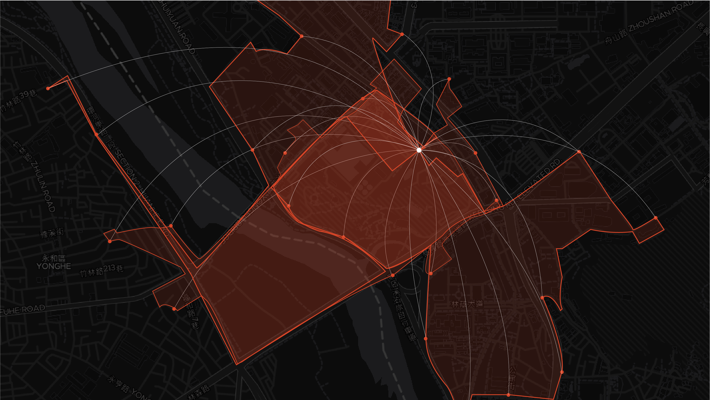
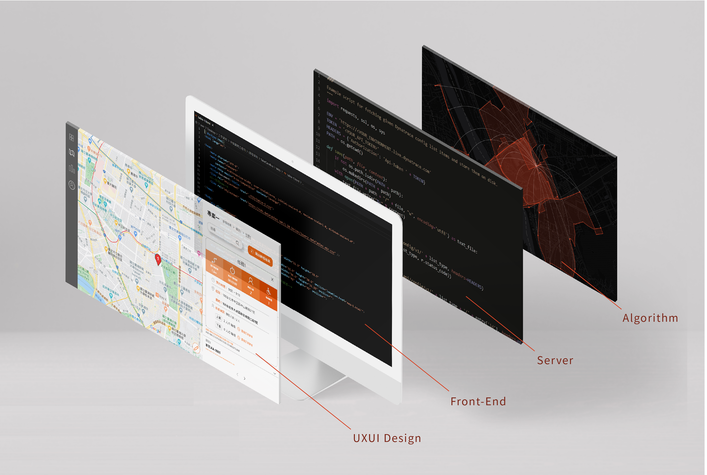

Client
CECI
Project
System Platform
My role
Front-end
Year
2020
TakeCareBus Web Application
Tags: IoT Product, Product Research, Cross-cultural, International
"TakeCareBus"provides online scheduling application services using VRP algorithms and reduces operational barriers through highly visual interface designs.This project was honored with the 2020 IBD DIGI+Global Digital Talent Awards.

Vehicle Routing Problem
We developed the VRP algorithm to provide scheduling optimization services. This is the core of the back-end, which is interfaced with the development of server build and front-end interface.
Model Validation
Set starting point of the vehicle and customize the routing conditions based on simulated order data to schedule the vehicle path. By repeatedly verifying results of the shortest distance path, the algorithm can flexibly apply to real traffic conditions
Market Analysis
We collected a large amount of data on the current scheduling service demands and competition of more than 20 related products in the Taiwanese market. The left figure shows product service types, and the bottom figure shows product feature offerings.
Frontend Development-System Framework
We completed the integration through RESTful APIs. When transmitting data, we also use packet security encryption technology UXUI Design and add a key mechanism to prevent user data leakage and attacks.
User Interface
The scheduling results are designed in the form of cards, using colors and icons to make a distinction, with the map panel on the left side to present the information at a glance.


Prev (P)
TaoyuanGo App Redesign
Next (N)
Onedegree Insurance Product Page

© 2025 All rights Reserved. Design by Catherine Tsai